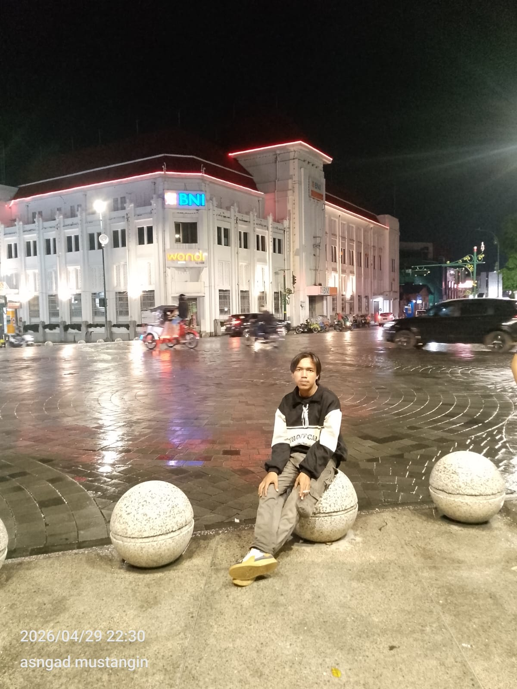

Membangun Jembatan Digital Antara Teknologi Modern dan Masa Depan Pertanian Indonesia. 🌾💻
Proyek
Tuntas
Ulasan
Rating
Halo! Nama saya Muhammad Iqbal Ramadhani. Saat ini saya adalah mahasiswa Sistem Informasi di Universitas Komputasi Cilacap. Kepribadian saya tumbuh dari perpaduan unik antara teknologi yang presisi dan dunia pertanian yang mendalam. Sebagai seorang Petani Aktif, saya memahami bahwa tantangan nyata di lapangan adalah bahan bakar utama inovasi digital yang saya kembangkan.
Visi: Menjadi jembatan utama dalam digitalisasi lahan pertanian Indonesia guna mewujudkan kedaulatan pangan nasional yang berbasis data.
Misi: Membangun platform manajemen pertanian yang cerdas namun mudah digunakan, mengedukasi masyarakat tani lokal tentang teknologi, serta mengintegrasikan solusi IoT untuk meningkatkan efisiensi lahan secara nyata.
"Menanam Kode, Menuai Inovasi."
Saya percaya disiplin adalah kunci kesuksesan. Sebagaimana tanah yang dirawat dengan telaten akan memberikan hasil panen melimpah, sistem informasi yang dirancang dengan dedikasi tinggi akan memberikan solusi yang berdampak luas bagi kemajuan bangsa.
Untuk menjaga stamina fisik dan kejernihan pikiran dalam menghadapi tantangan teknologi, saya sangat menggemari olahraga Lari dan Futsal. Lari melatih saya tentang daya tahan dan focus pada target jangka panjang, sementara Futsal mengasah insting kerja sama tim serta kecepatan dalam mengambil keputusan strategis di bawah tekanan.
Fase awal pembentukan kedisiplinan dan karakter moral yang kuat di lingkungan Rawalo. Di sini saya mulai mengenal dasar-dasar kepemimpinan dan kemampuan berorganisasi yang menjadi bekal penting hingga sekarang.
Pendidikan kejuruan di jurusan Teknik Kendaraan Ringan (TKR). Pengalaman di bidang otomotif dan perbengkelan ini membentuk etos kerja keras serta ketelitian mekanis saya, sebelum akhirnya saya memperluas cakrawala ke dunia digital dan sistem informasi di tingkat universitas.
Melanjutkan pendidikan S1 Sistem Informasi. Di kampus ini, saya mengintegrasikan keahlian IT dengan pengalaman lapangan saya sebagai petani, menciptakan solusi teknologi yang membumi bagi masyarakat lokal.
Aplikasi monitoring lahan yang membantu petani mencatat siklus tanam, penggunaan pupuk, dan estimasi keuntungan secara digital.
Sistem manajemen kehadiran instan berbasis QR Code. Meminimalkan kecurangan dan mempercepat rekapitulasi data.
Platform Point of Sales (POS) ringan untuk pedagang lokal mengelola inventaris dan laporan keuangan otomatis.
Otomasi sistem perpustakaan digital dengan manajemen buku, keanggotaan, dan pelacakan peminjaman.
Rancangan antarmuka aplikasi yang intuitif untuk teknologi agrikultur modern.
"The Ultimate Digital Agri-Integration"
Impian terbesar saya adalah membangun ekosistem cerdas di mana sensor IoT pada tanah dapat memberikan rekomendasi pemupukan dan penyiraman otomatis langsung ke ponsel petani.
"Bukan seberapa cepat kamu bergerak, tapi seberapa konsisten kamu melangkah menuju impianmu."